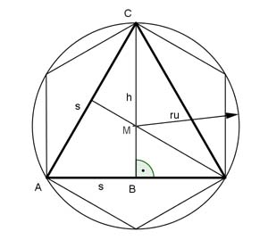

Aufgabe 99 Einem Kreis ist ein gleichseitiges Dreieck mit Seiten von 4 cm Länge einbeschrieben. Wie groß sind die Seiten eines im gleichen Kreis liegenden Sechsecks?  Satz von Pythagoras im Dreieck ABC: s s2 = h2 + (---)2 2 42 = h2 + 22 | -22 h2 = 16 – 4 = 12 | √ h = 3,5 cm ru = Seitenlänge des Sechsecks 2 2 ru = --- * h = --- * 3,5 cm = 2,3 cm 3 3